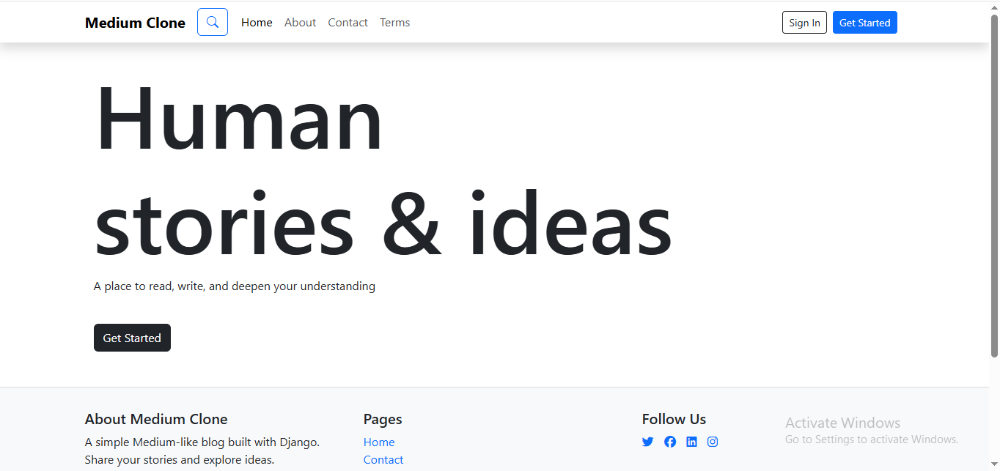

Hello, I am Sourabh 👋
a self-taught Django developer, specializing in building scalable and efficient backend systems.
My Skills
About me
Hi! I'm Sourabh, a passionate Python developer with a strong foundation in backend development and web technologies.
🎯 What I Do:
I specialize in building web applications using Python and Django. My focus is on creating clean, efficient backend systems that power modern web applications.
💻 Technical Skills:
- Python (Django)
- Web Development (HTML, CSS, Bootstrap)
- Database Management (Postresql)
- Version Control (Git)
- Problem-solving and debugging
🎓 Background:
Currently completed my degree from School of Open Learning, University of Delhi, I've been dedicating my time to mastering backend development. Through hands-on projects and continuous learning, I've built practical experience in web development principles and modern programming practices.
🚀 What I'm Looking For:
I'm actively seeking opportunities as a Python Developer or Backend Developer where I can contribute to innovative projects, work with experienced teams, and continue growing my technical skills.
Recent Projects

Medium_clone
A Medium-style blogging platform built with Django, Editor.js, Bootstrap, and PostgreSQL. Users can create, edit, and delete posts, comments, and user profiles. Fully responsive design and production-ready for deployment.

Django To-do App
This Django-based To-Do List web app helps users manage tasks efficiently with a clean UI. Built with Django, HTML, CSS, and Bootstrap, it allows users to add, edit, delete, and complete tasks easily.